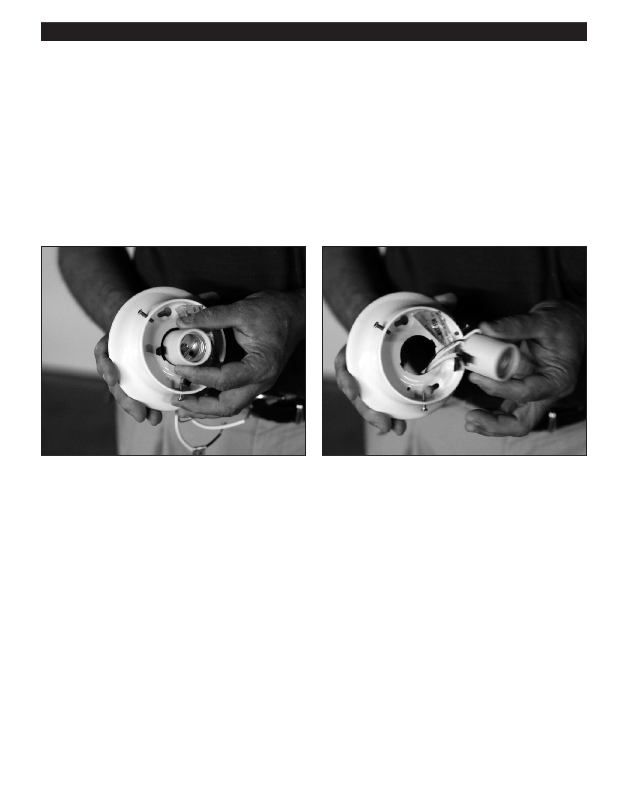

PA RT I C I PA N T R E S O U R C E G U I D E
Testing and Replacing a Socket (continued)
How-to Steps: Replacing a Socket
If your test shows that the socket needs to be replaced, then:
1. Remove the socket from the fixture.
2. Disconnect the wires attached to socket.
3. Connect wires to a new socket of the same size and ratings. (White wire to silver screw, black wire to brass screw.)
4. Replace the socket in fixture.
5. Reattach the light fixture.
6. Return power to the light fixture and turn on to make sure it works.
Notes:
61